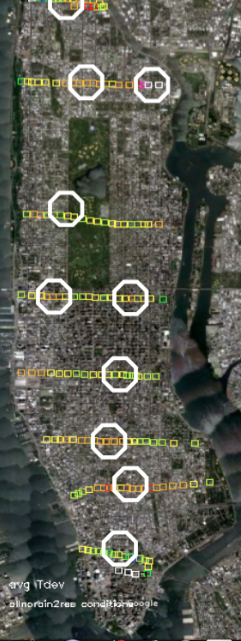

The field campaigns divide into two components: street level walking campaigns during the summers of 2012 and 2013, and mounted instruments during the summer of 2013 with plans to continue after the first set is analyzed.
This data is made freely available, but if used for publication please use the following acknowledgement or equivalent: Data furnished by the Manhattan Urban Heat Island Project, the NOAA-CREST Institute of the City College of New York with funding by the Consortium for Climate Risk in the Urban Northeast (CCRUN). A paper has been submitted for publication, but until published this website should be referenced.
Walking Field Campaign Averaged DataA sample of this data set is shown by the colored squares in the image to the right. At each location the deviation of the variable (T,RH,DP) from the Manhattan wide average (this is called the anomaly) is calculated, and the anomalies for all days are averaged together. In the data set these are referred to as Tdev, RHdev, DPdev. If the anomalies are recast as the number of standard deviations from the average, the variables are Tsd, RHsd, and DPsd. Surface characteristics are included for each point, including building area fraction and average height in meters. A complete description of how this data set is formed is found in the Dataset Creation page. Note that DewPoint represents the amount of water vapor in the air: the higher the dewpoint the higher the water vapor density. This makes it a more physical variable than Relative Humidity, which will change with temperature even if the amount of water vapor does not. RH is included for its influence on health.
Averaged Anomaly Data Street (east-west) walks The North-South (avenue) walks at this time of day were in full sunlight, so the response is different from the East-West (street) walks in shadow. Due to radiative bias correction there are currently no T values for this data set
Averaged Anomaly Data North-South walks This data is in text format and can be read by any word processor or imported into analysis software. The use of the T values for assessing statistical data quality with a chart is described here. Status: Summers of 2012-13 with instrument bias correction applied. Surface data from LandSat, NYC mapPluto (buildings), USGS added in. |
 |
Mounted Installation DataTen Instruments measuring Temperature, Relative Humidity and Illumination were mounted in the locations marked by white octogons on the map. Dewpoint was calculated from T and RH. The measurements were taken for 3 months at an interval of 3 minutes. The instruments were mounted between 3 an 4 meters high on lamp-posts with the approval of the NYC Department of Transportation. The data is in comma separated value (.csv) format which can be easily imported into spreadsheet or read by analysis software. The instrument locations are described in the Metadata Page, where MSL refers to the surface level above mean sea level and AGL refers to the height of the instrument shelter above the surface.
145th Street
The dataset below is formed of hourly average anomalies of each station from the station average, showing the diurnal cycle. This is in text format. In addition to raw data and averages, measures of spatial variability between stations and temporal variability at each station has been calculated, and is available in text format. The values represent standard deviations in temperature and dewpoint. |
Note that the data sets below have been re-formatted from other sources (NYC MapPluto, USGS, LandSat etc) and the original sources should be acknowledged in any publication using this data. All data has been aggregated or regridded to a common 0.001 degree (100 meter) resolution grid.
Building characteristics have been tabulated by the New York Cities Department of City Planning and tabulated in their (Map Pluto) data set. In the datasets below this has been paired with Normalized Difference Vegetation Index (NDVI) and estimated Albedo from the LandSat satellite, and elevation from the US Geological Survey, for which the 30 m resolution was aggregated to the same 0.001 degree resolution as the rest of the data.
The influence of water is modeled as the fraction of river/bay water within a 1 km box centered on each point. River water location is found by finding elevations below 0.2 m.
More detailed information on the preparation of these sets can be found in the Dataset Creation page.